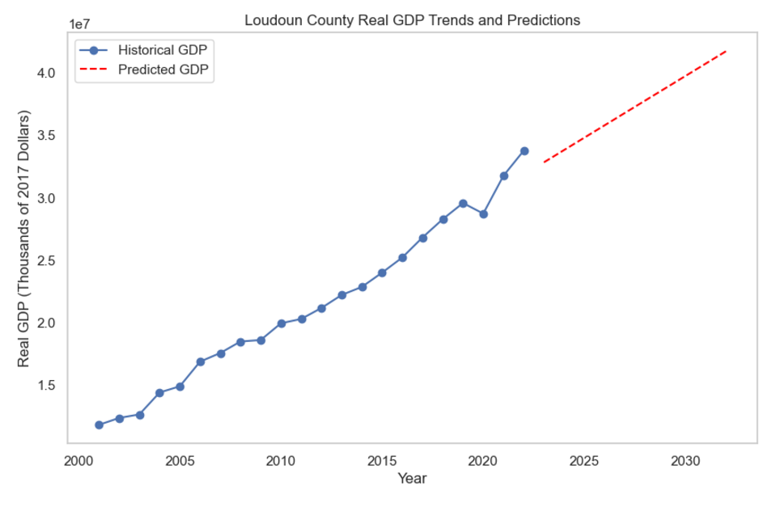
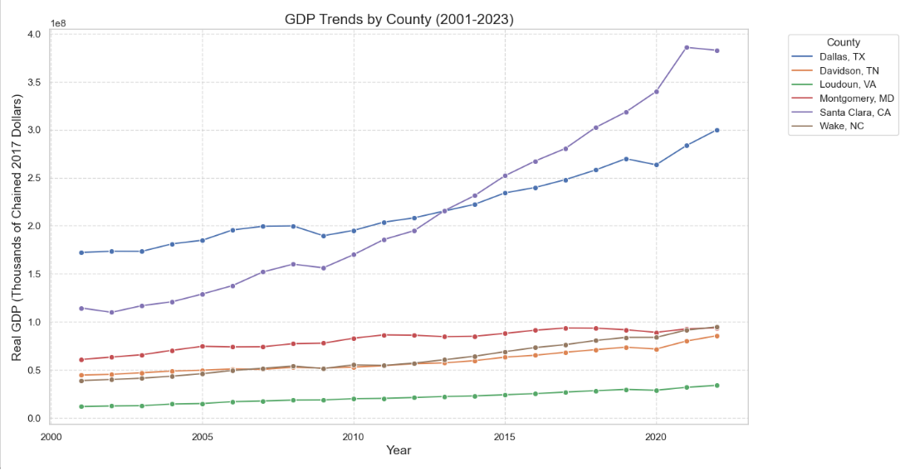
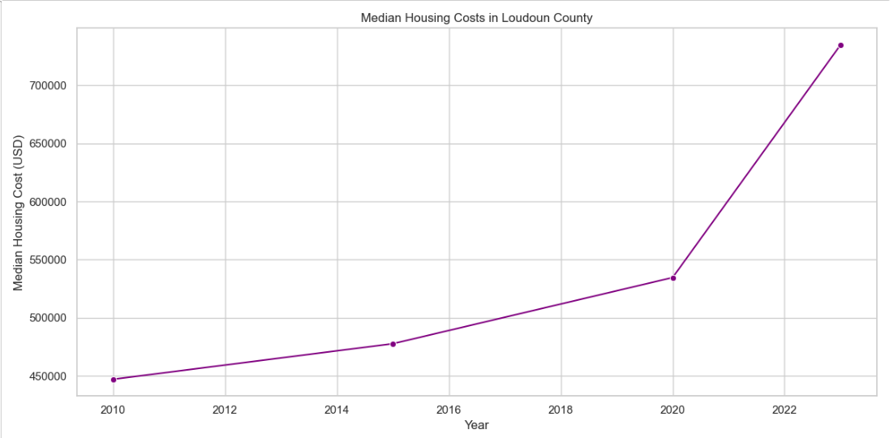

Overview
Growth is a story told across many datasets.
Understanding how a region is really changing means looking past any single indicator. Population, jobs, income, housing, and affordability each live in different federal datasets, measured differently and released on different schedules. On their own, each tells a partial story; together, they reveal whether growth is broad-based and sustainable — or uneven.
This independent study brought those sources into one model for Loudoun County, Virginia, and benchmarked the county against relevant peers so the numbers had context.
The Challenge
Different sources, different shapes, one coherent picture.
The core difficulty was integration. Census, BLS, and BEA data arrive with different geographies, time granularities, units, and revision cycles. Joining them into a single, trustworthy analytical model — without introducing mismatches or double-counting — was the prerequisite for any credible finding.
Questions
What the study set out to answer.
- How have population, employment, and income moved together over time?
- Is housing supply and affordability keeping pace with economic growth?
- How does the county compare with peer counties on the same measures?
- What do recent trends imply for the near-term trajectory?
Approach
Integrate, model, benchmark, project.
- Ingested and normalized data from Census, BLS, and BEA, aligning geographies, units, and time periods.
- Built an integrated analytical model in Python and SQL, with cloud storage on AWS.
- Applied statistical analysis and forecasting to identify trends and project near-term direction.
- Benchmarked Loudoun against peer counties to separate local dynamics from regional ones.
- Produced visualizations that make the multi-source story legible at a glance.
Analysis
Six dimensions, one model — and the actual output.
The integrated model let each dimension be read against the others. The charts below are the real project visualizations, produced in Python from the combined Census, BLS, and BEA data.
Real GDP trend with forward projection

Benchmarked against peer counties

The affordability lens: income against cost

Findings
Context changes the conclusion.
Integration made comparison possible
Bringing Census, BLS, and BEA into one model allowed indicators to be read together rather than in isolation — the point of the exercise.
Affordability is the pressure point
Reading housing cost against income and employment growth surfaced affordability as the dimension most worth watching.
Peers provide the real yardstick
Benchmarking against comparable counties distinguished county-specific dynamics from broader regional trends.
This is an independent analytical study. It summarizes methodology and the shape of the findings; full figures and code are in the project repository.
Tools & Methods
How it was built.
Project repository: github.com/Akemp787/Loudoun_County_Growth_Study.